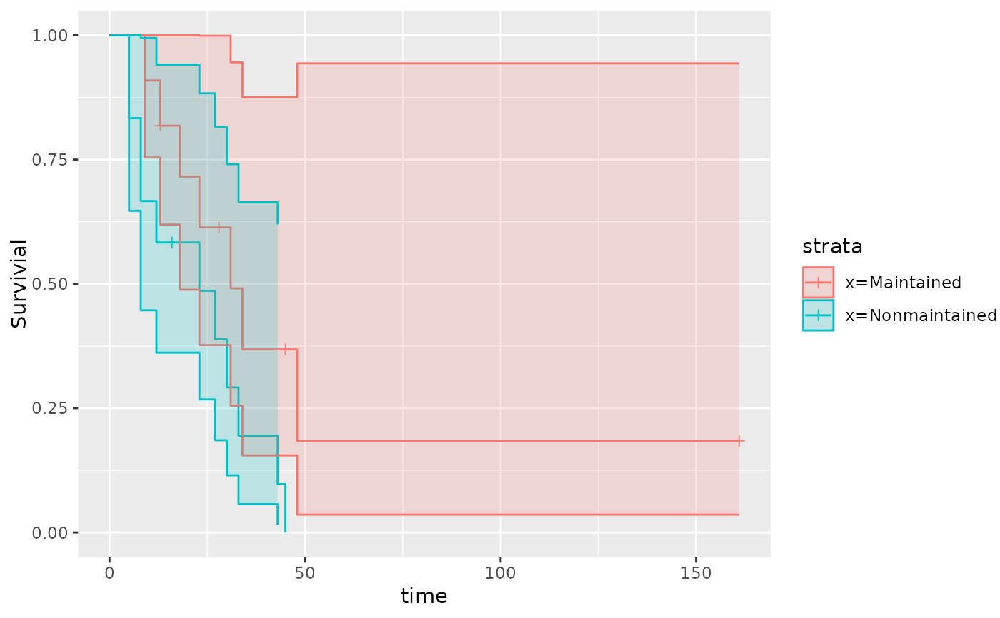

A ggplot2 version of a Kaplan-Meier Plot
Usage
qkmplot(x, conf_int = FALSE, ...)
qkmplot_bulid_data_frame(x)
# S3 method for survfit
qkmplot_bulid_data_frame(x)
qrmst(x, tau = Inf)
# S3 method for survfit
qrmst(x, tau = Inf)
# S3 method for qwraps2_generated
qrmst(x, tau = Inf)Arguments
- x
object
- conf_int
logical if TRUE show the CI
- ...
Other arguments passed to survival::plot.survfit
- tau
upper bound on time for restricted mean survival time estimate
Details
Functions to build, explicitly or implicitly, data.frames and then creating a ggplot2 KM plot.
More details and examples for graphics within qwraps2 are in the vignette(“qwraps2-graphics”, pacakge = qwraps2)
Examples
# create a survfit object
require(survival)
#> Loading required package: survival
leukemia.surv <- survival::survfit(survival::Surv(time, status) ~ x, data = survival::aml)
qkmplot(leukemia.surv, conf_int = TRUE)
#> Warning: Removed 1 rows containing non-finite values (`stat_step_ribbon()`).

qkmplot_bulid_data_frame(leukemia.surv)
#> time n.risk n.event n.censor surv upper lower
#> 1 9 11 1 0 0.90909091 1.0000000 0.75413385
#> 2 13 10 1 1 0.81818182 1.0000000 0.61924899
#> 3 18 8 1 0 0.71590909 1.0000000 0.48842629
#> 4 23 7 1 0 0.61363636 0.9991576 0.37686706
#> 5 28 6 0 1 0.61363636 0.9991576 0.37686706
#> 6 31 5 1 0 0.49090909 0.9455850 0.25485995
#> 7 34 4 1 0 0.36818182 0.8752607 0.15487712
#> 8 45 3 0 1 0.36818182 0.8752607 0.15487712
#> 9 48 2 1 0 0.18409091 0.9435258 0.03591790
#> 10 161 1 0 1 0.18409091 0.9435258 0.03591790
#> 11 5 12 2 0 0.83333333 1.0000000 0.64703699
#> 12 8 10 2 0 0.66666667 0.9946254 0.44684608
#> 13 12 8 1 0 0.58333333 0.9409980 0.36161371
#> 14 16 7 0 1 0.58333333 0.9409980 0.36161371
#> 15 23 6 1 0 0.48611111 0.8833192 0.26751825
#> 16 27 5 1 0 0.38888889 0.8157357 0.18539653
#> 17 30 4 1 0 0.29166667 0.7408220 0.11483115
#> 18 33 3 1 0 0.19444444 0.6642237 0.05692155
#> 19 43 2 1 0 0.09722222 0.6195486 0.01525653
#> 20 45 1 1 0 0.00000000 NA NA
#> 110 0 NA NA 0 1.00000000 1.0000000 1.00000000
#> 111 0 NA NA 0 1.00000000 1.0000000 1.00000000
#> strata
#> 1 x=Maintained
#> 2 x=Maintained
#> 3 x=Maintained
#> 4 x=Maintained
#> 5 x=Maintained
#> 6 x=Maintained
#> 7 x=Maintained
#> 8 x=Maintained
#> 9 x=Maintained
#> 10 x=Maintained
#> 11 x=Nonmaintained
#> 12 x=Nonmaintained
#> 13 x=Nonmaintained
#> 14 x=Nonmaintained
#> 15 x=Nonmaintained
#> 16 x=Nonmaintained
#> 17 x=Nonmaintained
#> 18 x=Nonmaintained
#> 19 x=Nonmaintained
#> 20 x=Nonmaintained
#> 110 x=Maintained
#> 111 x=Nonmaintained
qrmst(leukemia.surv) # NaN for rmst.se in Nonmaintained strata as laste observation is an event
#> strata tau rmst rmst.se
#> x=Maintained x=Maintained 161 49.15227 20.47987
#> x=Nonmaintained x=Nonmaintained 45 18.22222 NaN
qrmst(leukemia.surv, 44)
#> strata tau rmst rmst.se
#> x=Maintained x=Maintained 34 23.74773 3.572009
#> x=Nonmaintained x=Nonmaintained 43 18.22222 4.129277